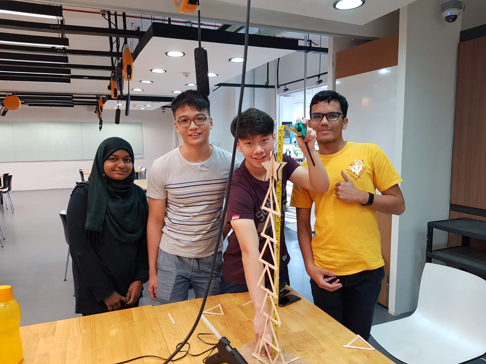

Home page
For the Engineering Academy(EA) try out from 10 December to 12 December, we were given a project in which we had to put our ideas and figure out the solution by the end of 3 days. The objective of the project is to create a vehicle that would detect an object on its way and moves towards it, however when it approaches the object, it would avoid the object. The basic equipments that we were given was Microcontroller Uno R3, Servomotors, ultrasonic Sensor, 4 AA batteries and other spare parts such as wheels, wires etc., Furthermore, in order to design this project, we are required to use Fusion 360 to get the shape of the vehicle. During the course of 3 days, we learned how to create a website using HTML and CSS, how to use Fusion 360, how to prototype in order to achieve good results, how to program our vehicle by using arduino, and learning about the actual parts of the vehicle such as pulse-width modulation and control, interfacing the motors, chassis design,motion and construction of several parts
Even though along the way, we struggled and faced problems, we managed to pull it off by discussing with our team mates and suggestions by others. We divided the tasks among ourselves, which helped us to focus and to fasten the work.